Development Environment Setup
- https://www.arduino.cc/en/software
- https://create.arduino.cc/editor
- https://create.arduino.cc/getting-started/plugin/welcome
- Export to PDF
Arudino IDE Download (1.18.19)
Arduino Web Editor (Require Plugin Install for Chrome)
Slides in PDF
Learning Outcome
- Understand the working principles of Microcontrollers
- Apply knowledge and develop program to control & monitor sensors
Microcontroller
Microcontroller is a self contained computer, in a compact IC (Integrated Circuit) chip, with specialized peripherals for embedded applications"
Peripherals
- General Purpose I/O (GPIO)
- UART, I2C, SPI, CAN, Ethernet, USB
- Timers
- ADCs and DACs
- Pulse Width Modulators (PWM)
Architecture
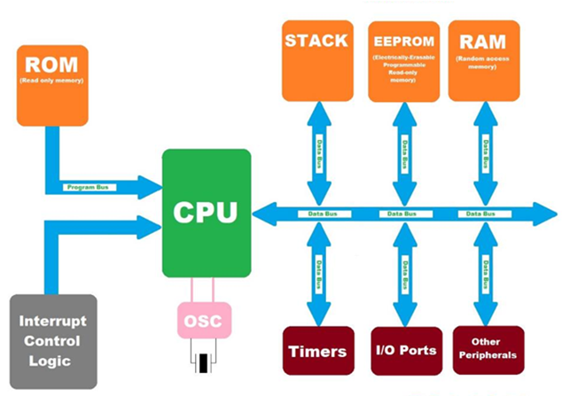 https://www.theengineeringprojects.com/2018/03/introduction-to-microcontrollers.htmlMicrontroller based System
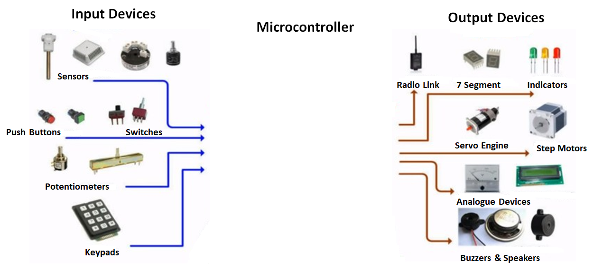
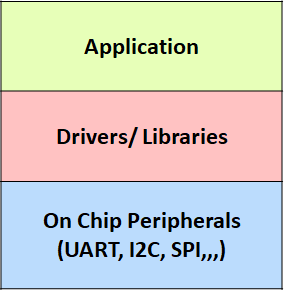
Microcontroller Use Cases
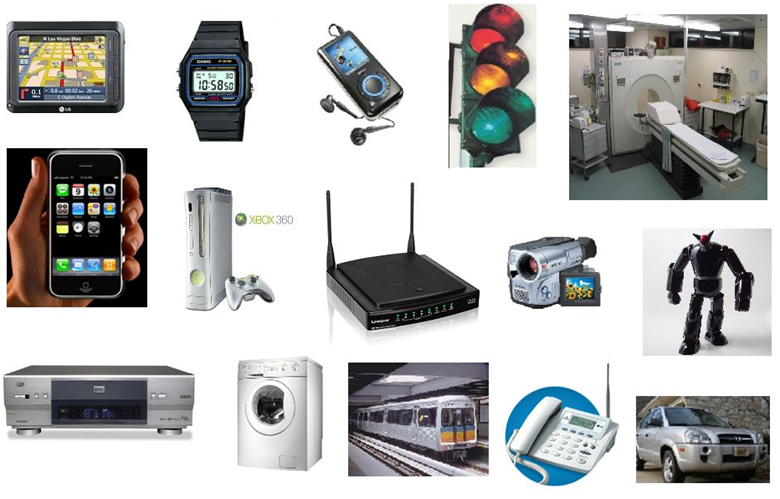- GPS
- Watches
- Microwave oven
- Coffee maker
- Washer and dryers
- Home entertainment
- Engine control (ECU)
- Fuel system
- Airbags
- Door locks
- Instrumentation
Consumer Appliances
Automobile Systems
Ultrasonic Distance Sensor
Ultrasonic Distance Sensor
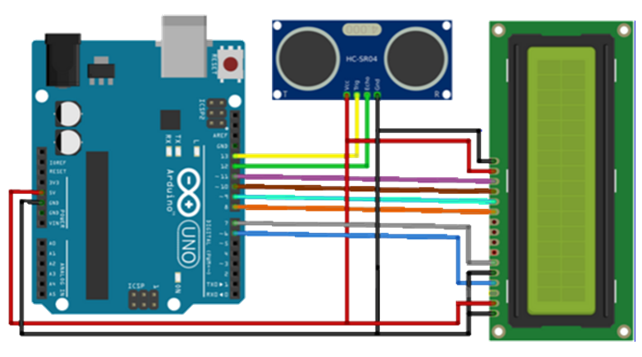- Arduino UNO
- Ultrasonic (HC-SR04)
- Display (DFR0486)
- https://www.arduino.cc/en/software
- https://create.arduino.cc/editor
- https://create.arduino.cc/getting-started/plugin/welcome
Download Sample Code
- https://github.com/keigo-aw/arduino-sensor/tree/main/sketch
Import into Arduino IDE
- Select “Sketch”->”Import”
Connect the UNO Board to PC
Compile & Upload to UNO Board
LED Blink & Serial Monitor
Download Library
- https://github.com/olikraus/U8glib_Arduino/releases/tag/1.18.1
Add Library to Project
- Run the Arduino IDE
- Select “Sketch”->”Include Library”-> “Add .ZIP Library…”
Learning Outcomes
- Understand the working principles of Microcontrollers
- Apply knowledge and develop program to control & monitor sensors
Key Components
How it works
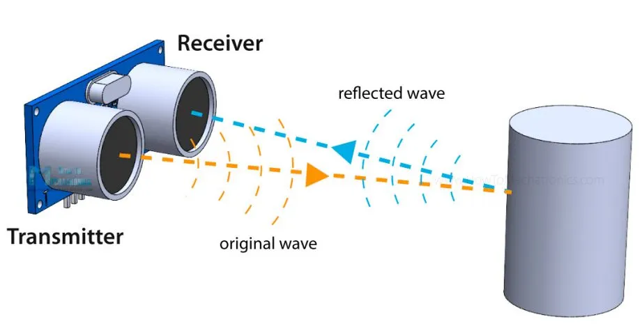
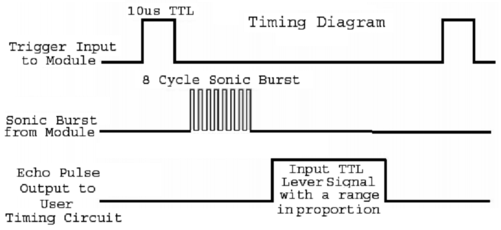
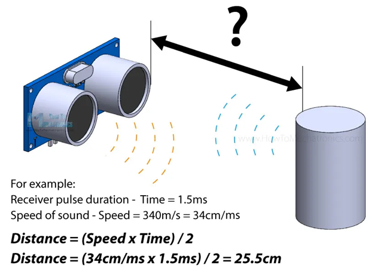
https://howtomechatronics.com/tutorials/arduino/ultrasonic-sensor-hc-sr04/
Ultrasonic Sensor (HC-SR04)

| Specifications | |
| Operation Voltage | 5V |
| Operating Current | 15mA |
| Operating Frequency | 40 Hz |
| Measurement Angle | 15° |
| Resolution | 0.3cm |
| Range | 2 – 400 cm |
I2C OLED Display (DFR0486)
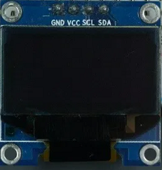| Specifications | |
| Operation Voltage | 3.3~5V |
| Resolution | 128x64 pixels |
| Interface Mode | Gravity I2C |
| Power Consumption | 22.75mA |
| Module Size | 41.2x26.2mm |
| Module Weight | 15g |
Arduino UNO
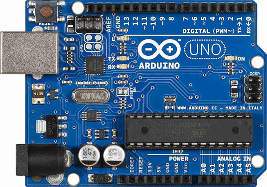| Specifications | |
| Microcontroller | ATmega328P |
| Power | I/O Voltage: 5V Input Voltage: 7-12V |
| Clock Speed | 16 MHz |
| Memory | Flash: 32 KB SRAM: 2KB EEPROM: 1KB |
| Pins | Digital I/O: 14 PWM Digital: 6 Analog Input: 6 |
| Dimension | L68.6 x W58.4 mm |
| Weight | 25g |
Hardware Setup
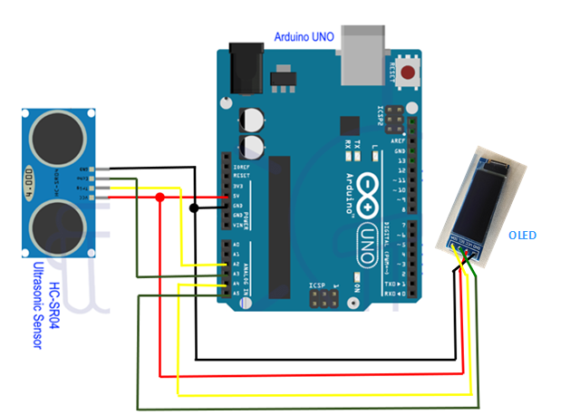 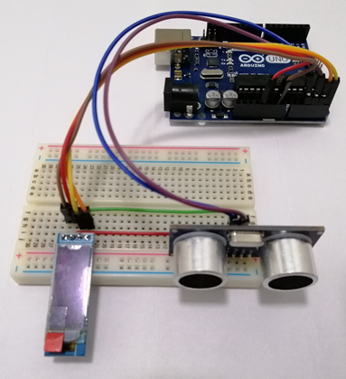References:
Arduino Uno Pinout
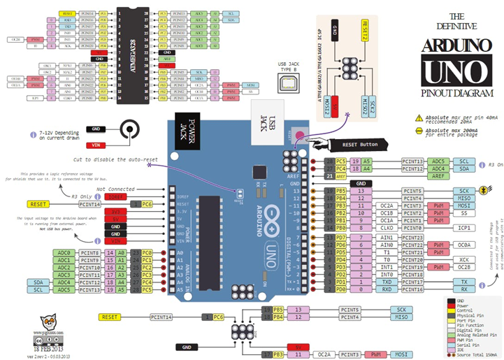
References:
Pins to use
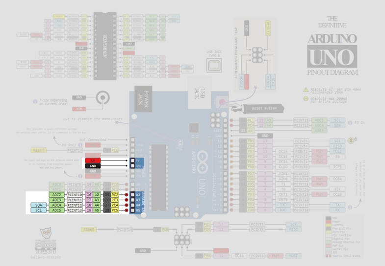
References:
Breadboard Connections
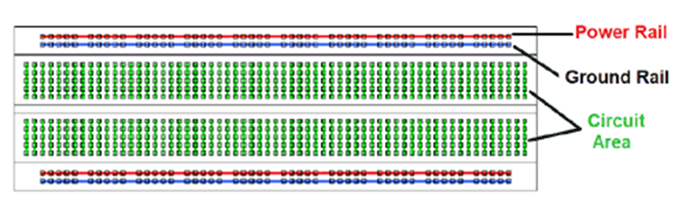
Hand-on Session
Development Environment Setup
Arudino IDE Download (1.18.19)
Arduino Web Editor (Require Plugin Install for Chrome)
Download & Run Sample Code
Sample Code
// ---------------------------------------------------------------- //
// Arduino Ultrasoninc Distance Sensor (HC-SR04)
// Using Arduino IDE 1.8.16
// Tested on 05 Jul 2022
// ---------------------------------------------------------------- //
//=================================================================
// Drivers & Libraries
//=================================================================
#include "stdio.h"
/*
@todo - add codes to include library header
*/
//=================================================================
// Pins Definition
//=================================================================
/*
@todo - define pins for ultrasonic & buzzer
*/
#define echo_pin 17 // attach pin A2 Arduino to pin Echo of HC-SR04
#define trig_pin 16 // attach pin A3 Arduino to pin Trig of HC-SR04
#define buzz_pin 15 // attach pin A1 Arduino tp pin Vcc of buzzer
//=================================================================
// Variables Declaration
//=================================================================
/*
@todo (ultrasonic) - declare variables for distance calculation
*/
/*
@todo - oled display (SSD1306), add codes to declare display instance
*/
//=================================================================
// LED blink
//=================================================================
void led_blink()
{
// On for 100msec
digitalWrite(LED_BUILTIN, HIGH);
delay(100);
// Off for 100msec
digitalWrite(LED_BUILTIN, LOW);
delay(100);
}
//=================================================================
// Trigger pulse & measure travel time
//=================================================================
void trigger_measure()
{
/**
@todo (ultrasonic) - add codes to write a trigger pulse & wait to receive the echo pulse
*/
}
//=================================================================
// Calculate distance
//=================================================================
void calculate_distance()
{
// Calculating the distance
/**
@todo (ultrasonic) - add codes to calculate distance
*/
}
//=================================================================
// Write distance to OLED display
//=================================================================
void draw(void)
{
/**
@todo (oled display) - add codes to display text
*/
}
//=================================================================
//
//=================================================================
void play_tone(void)
{
}
//=================================================================
// System Initialization
//=================================================================
void setup(void)
{
// Configure I/O pins
/**
@todo - add codes to configure pins as input or output
*/
pinMode(LED_BUILTIN, OUTPUT); // Set pin LED_BUILTIN as an output
// Serial monitor setup (baudrate: 9600)
Serial.begin(9600);
Serial.println("Ultrasonic Distance Sensor");
Serial.println("with Arduino UNO R3");
}
//=================================================================
// Logic Execution
//=================================================================
void loop(void) {
// Comment off led_blink(), for faster response on ultrasonic distance measurement
// LED blink
led_blink();
// Trigger ultrasonic pulse and measure duration
trigger_measure();
// Calculate distance based on lapsed interval
calculate_distance();
/**
@todo - add new logic here
*/
delay(50);
}
Exercise 1: OLED Display
"Hello World” on OLED Display
Include library
#include "U8glib.h"
Declare u8glib instance
U8GLIB_SSD1306_128X32 u8g(U8G_I2C_OPT_NONE);
Add to function draw()
// Graphic commands to redraw the complete screen
u8g.setFont(u8g_font_unifont);
u8g.drawStr(0, 20, "Hello World!");
Add to function loop()
// Update OLED display
u8g.firstPage();
do {
draw();
} while (u8g.nextPage());
OLED Display Connection
| OLED Display | Arduino |
| GND | GND |
| Vcc(+5V) | 5V |
| SDA(data) | A4/18(I2C) |
| SCL(clock) | A5/19(I2C) |
u8glib Documentation
Exercise 2: Ultrasonic Sensor
Add variables
long duration; // variable for the duration of sound wave travel
float distance; // variable for the distance measurement
char charArrayDist[10];
String stringUnit = "cm";
Add to function Setup()
pinMode(trig_pin, OUTPUT); // Sets trig_pin as an OUTPUT
pinMode(echo_pin, INPUT); // Sets echo_pin as an INPUT
Add to function trigger_measure()
// Clears the trig_pin condition
digitalWrite(trig_pin, LOW);
delayMicroseconds(2);
// Sets the trig_pin HIGH (ACTIVE) for 10 microseconds
digitalWrite(trig_pin, HIGH);
delayMicroseconds(10);
digitalWrite(trig_pin, LOW);
// Reads the echo_pin, returns the sound wave travel time in microseconds
duration = pulseIn(echo_pin, HIGH);
Add to function calculate_distance ()
// Calculate the distance
distance = duration * 0.034 / 2; // Speed of sound wave divided by 2 (to and fro)
Add to function loop()
// Displays distance to serial monitor
Serial.print("Distance: ");
Serial.print(distance);
Serial.println(" cm");
Ultrasonic Sensor Connection
| Ultrasonic | Adruino |
| Vcc(+5V) | 5V |
| Trig | A2/16(GPIO) |
| Echo | A3/17(GPIO) |
| GND | GND |
Distance on OLED Display
Replace codes in function draw()
// Set display font
u8g.setFont(u8g_font_unifont);
// Convert decimal value to string
dtostrf(distance, 4, 2, charArrayDist);
// Append text “cm”
strcat(charArrayDist, stringUnit.c_str());
// Draw distance value & “cm”
u8g.drawStr(0, 12, charArrayDist);
Extra: Buzzer
Add to function setup()
// Sets the pin as an OUTPUT
pinMode(buzz_pin, OUTPUT);
Add to function play_tone()
// Start tone (pin number, frequency in Hz)
tone(buzz_pin,200);
delay(500);
// Stop tone (pin number, frequency in Hz)
noTone(buzz_pin);
delay(500);
Add to function loop()
// Conditional activation of buzzer
if (distance < 3)
{
play_tone();
}
Buzzer Connection
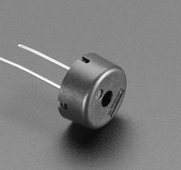| Buzzer | Adruino |
| GND (Short Leg) | GND |
| Vcc (Long Leg) | A1/15(GPIO) |
Extra Extra: Buzzer to play Melody
Include Header File
#include "melody.h"
Declare Variables
// Melody notes
int melody[] =
{
NOTE_C4, NOTE_G3, NOTE_G3, NOTE_A3, NOTE_G3, 0, NOTE_B3, NOTE_C4
};
// Note durations: 4 = quarter note, 8 = eighth note, etc.
int noteDurations[] =
{
4, 8, 8, 4, 4, 4, 4, 4
};
Replace codes in function play_tone()
for (int thisNote = 0; thisNote < 8; thisNote++)
{
// to calculate the note duration, take one second divided by the note type
// e.g. quarter note = 1000 / 4, eighth note = 1000/8, etc.
int noteDuration = 1000 / noteDurations[thisNote];
tone(buzz_pin, melody[thisNote], noteDuration);
// to distinguish the notes, set a minimum time between them.
// the note's duration + 30% seems to work well:
int pauseBetweenNotes = noteDuration * 1.30;
delay(pauseBetweenNotes);
// stop the tone playing:
noTone(8);
}
Summary
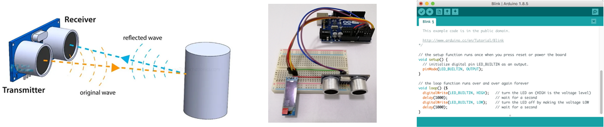
Aw Kok Seng
kokseng.aw@singaporetech.edu.sg
Raymond Keh
raymond.keh@singaporetech.edu.sg